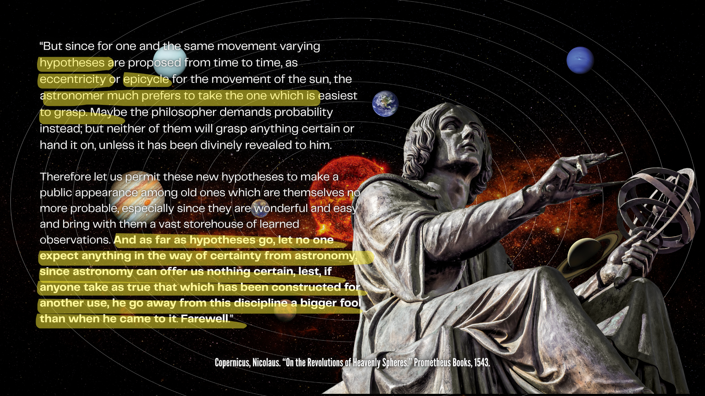

The Fictitious Observer
at the Earth's Centre
How celestial navigation and positional astronomy define the geocentric position of a star: not by what a real observer measures on the surface, but by what an imaginary observer at the centre of the Earth is said to see.
The Convention
One reference point, stated the same way for eight centuries
From the medieval Sphere of Sacrobosco to the 2019 American Practical Navigator, the discipline reports the same thing in the same way. A celestial body's altitude is referred to an observer at the centre of the Earth, that centre is declared identical to the centre of the celestial sphere, and the body's ground point, its geographic position (GP), is defined as the spot where a straight line from the body to that centre pierces the surface.
The reference observer is fictitious. The geocentric altitude is what an observer at the Earth's centre would measure. The real surface observer enters the procedure only as a measurement to be reduced inward to that centre. This page collects the primary and mainstream sources that say so, verbatim, with page-referenced screenshots.
Jump to a source · newest to oldest
Mainstream Corroboration
Web references
Reference works and encyclopaedias state the geocentric convention directly.